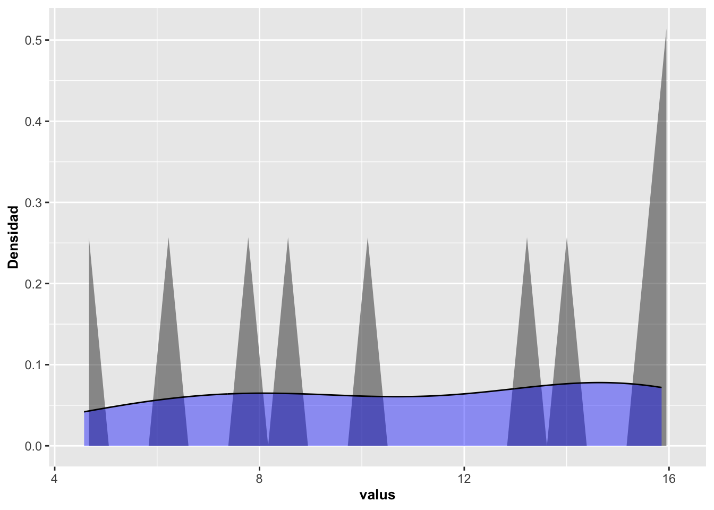
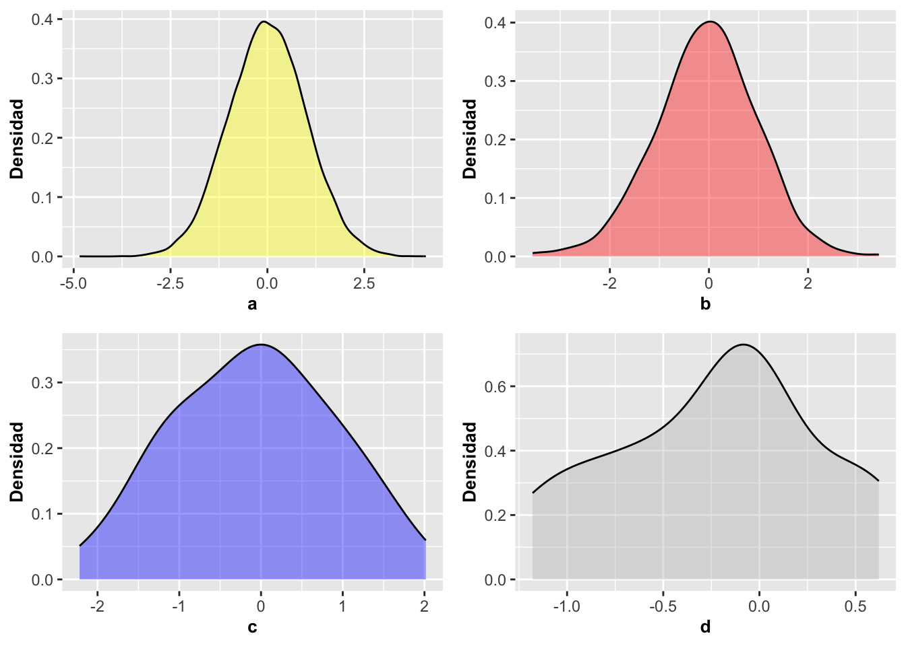

Chapter 11 Histograms/Density Plots
11.1 Histograms with geom_histogram
A histogram is a graphical representation of data grouped into compartments or bins. These compartments include individuals with similar or numerically close factors or groupings of values. Subsequent to the determination of the compartments, the number of observations for each of them is added. A histogram is a very common type of graph to visualize the spread of that data. We will continue with the Dipodium example to demonstrate the function of geom_histogram below.
In the first case of geom_histogram the number of observations (data) is added according to the position of the compartments or bins.
In the second case, to show fewer bars and see the grouping by groups of 2, it is written with geom_histogram (binwidth=1). As you can see, the number of compartments is changed using the binwidth parameter, where its value represents the width of the compartment (in our case it is equal to 1). The default number of bins is 30, but not necessarily all of them will have a bar since that depends on the distribution of the data. Each bar represents the frequency of observations in the category at one meter distance. In both cases, color=white was used to put a white line around each bar and thus better differentiate the groups or bins. Note that the program returns the message stat_bin() using bins = 30. Pick better value with binwidth. This is because the predetermined compartment amount was accepted.
## [1] "tree_number" "tree_species"
## [3] "dbh" "plant_number"
## [5] "ramet_number" "distance"
## [7] "orientation" "number_of_flowers"
## [9] "height_inflo" "herbivory"
## [11] "row_position_nf" "number_flowers_position"
## [13] "number_of_fruits" "perc_fr_set"
## [15] "pardalinum_or_roseum" "fruit_position_effect"
## [17] "frutos_si_o_no" "p_or_r_infl_lenght"
## [19] "num_of_fruits" "species_name"
## [21] "cardinal_orientation"| tree_number | tree_species | dbh | plant_number | ramet_number | distance | orientation | number_of_flowers | height_inflo | herbivory | row_position_nf | number_flowers_position | number_of_fruits | perc_fr_set | pardalinum_or_roseum | fruit_position_effect | frutos_si_o_no | p_or_r_infl_lenght | num_of_fruits | species_name | cardinal_orientation |
|---|---|---|---|---|---|---|---|---|---|---|---|---|---|---|---|---|---|---|---|---|
| 1 | E.o | 75 | 1 | 1 | 2.47 | 40 | 11 | 35 | n | 1 | 24 | 0 | 0.00 | r | 1 | 0 | r | 0 | r | 1 |
| 1 | E.o | 76 | 2 | 1 | 1.97 | 50 | 19 | 47 | n | 2 | 23 | 0 | 0.00 | r | 2 | 0 | r | 0 | r | 2 |
| 2 | E.o | 76 | 3 | 1 | 1.95 | 350 | 18 | 63 | n | 3 | 25 | 1 | 0.04 | r | 3 | 0 | r | 1 | r | 8 |
| 3 | E.o | 58 | 4 | 1 | 3.24 | 210 | 24 | 47 | n | 4 | 20 | 5 | 0.25 | r | 4 | 0 | r | 5 | r | 5 |
| 4 | E.o | NA | 5 | 1 | 0.85 | 80 | 25 | 61 | n | 5 | 13 | 0 | 0.00 | r | 5 | 0 | r | 0 | r | 2 |
| 5 | E.o | 59 | 6 | 1 | 2.62 | 160 | 17 | 35 | n | 6 | 25 | 2 | 0.08 | p | 6 | 0 | r | 2 | p | 4 |
a=ggplot(DW, aes(distance))
a+geom_histogram(color="white", fill="blue")+
labs(x="Distancia", y="Frecuencia")+
theme(axis.title=element_text(size=10,face="bold"))## `stat_bin()` using `bins = 30`. Pick better value
## with `binwidth`.
11.2 Changing bin sizes with binwidth
This histogram demonstrates the distances of the Dipodium roseum orchids from the nearest trees. This species of orchid is parasitic on fungi/mycorrhizae and does not produce photosynthesis. The hypothesis is that mycorrhizae, fungi, receive nutrients from the roots of the trees and the nutrients are transferred to the orchids through the mycorrhizae. Consequently, an optimal distance from the orchid to the trees that support the mycorrhizae should hypothetically be observed if the hypothesis has any veracity. As explained before, in the second graph, the binwidth was changed to 1, which in this case represents the distance of 1 meter, and the bins range from -.5 to .5 m., the second ** bin** from >0.5 to 1.5 meters and so on.
## [1] 1363a=ggplot(DW, aes(distance))
a+geom_histogram(binwidth=.5,color="white", fill="blue")+
labs(x="Distancia", y="Frecuencia")+
theme(axis.title=element_text(size=10,face="bold"))
11.3 Numbers of hospital beds per 1000 inhabitants in different countries
In the following graph, we see the frequency of the number of hospital beds per 1000 inhabitants for 67 countries using the Hospital_Camas database. It was done with the information that was available only for the years 1996 and 2006. We have two overlapping graphs to visualize if the distribution has changed between the years 1996 and 2006. Note that the frequencies from 2006 appear above those from 1996.
| Pais | Year | Poblacion | Camas |
|---|---|---|---|
| Armenia | 1996 | 3173425 | 7.13 |
| Australia | 1996 | 18311000 | 8.50 |
| Austria | 1996 | 7959017 | 9.30 |
| Azerbaijan | 1996 | 7763000 | 9.81 |
| Bahamas, The | 1996 | 283792 | 3.94 |
| Barbados | 1996 | 265940 | 7.56 |
## 'data.frame': 134 obs. of 4 variables:
## $ Pais : Factor w/ 67 levels "Armenia","Australia",..: 1 2 3 4 5 6 7 8 9 10 ...
## $ Year : int 1996 1996 1996 1996 1996 1996 1996 1996 1996 1996 ...
## $ Poblacion: int 3173425 18311000 7959017 7763000 283792 265940 10160000 213674 7717445 8362826 ...
## $ Camas : num 7.13 8.5 9.3 9.81 3.94 ...## [1] 1996 2006a=ggplot(Camas_Hospital, aes(Camas, fill=factor(Year)))
a+geom_histogram(stat="bin")+
xlab("Número de camas por cada 1000 habitantes")+
ylab("Frecuencia")## `stat_bin()` using `bins = 30`. Pick better value
## with `binwidth`.
11.4 Modifying continuous scales with scale_y_continuous and scale_x_continuous
We demonstrate how to modify the scale, first with an impractical method by numbering on the Y axis each value where we want a line. Note that the number 10 is excluded and that is why it does not appear on the Y axis the function is scale_y_continuous(breaks=c(x,x,x…x). On the * axis *X is also numbered but this time the scale is defined with scale_x_continuous(breaks=c( ), and c(x:xx) with an initial value of 1 and final value of 15 to identify what are the values that one wants in the axes; that is more practical and includes the value 10. The information on the axes is also modified using xlab and ylab**, so that the description of the columns can be presented in a specific way and so on. make the information clearer for chart purposes.
a=ggplot(Camas_Hospital, aes(Camas, fill=factor(Year)))+
geom_histogram(stat="bin", alpha=0.3)+
scale_y_continuous(breaks=c(0,1,4,5,6,7,8,9,11,12,13,14,15))+
scale_x_continuous(breaks=c(0:15))+
theme(axis.title=element_text(size=10,face="bold"))
a## `stat_bin()` using `bins = 30`. Pick better value
## with `binwidth`.11.5 Frequency and color intensity overlap
We might think that, because the frequencies overlap, it is difficult to have a good appreciation of the distribution of the data. To compare the frequencies between the groups more easily, the frequencies can be differentiated with 3 colors; in this case the blue color for the year 2006, the peach color for the year 1996, and the grayish color for the frequencies that overlap with both years. position=identity and alpha= are used to modify the color intensities of the bars. Now we see that, for example, in 1996 the most common frequency in the countries was less than 2 beds per 1,000 inhabitants, and that by 2006 it was already between 2 and 8 beds per 1,000 inhabitants.
a=ggplot(Camas_Hospital, aes(Camas, fill=factor(Year)))
a+geom_histogram(stat="bin", alpha=0.5,
position="identity")+
xlab("Número de camas por \n 1000 habitantes")+
ylab("Frecuencia")+
scale_y_continuous(breaks=c(0:9))+
scale_x_continuous(breaks=c(0:15))+
theme(axis.title=element_text(size=10,face="bold"))## `stat_bin()` using `bins = 30`. Pick better value
## with `binwidth`.11.6 Position the bars next to each other with the dodge function
a=ggplot(Camas_Hospital, aes(Camas, fill=factor(Year)))
a+geom_histogram(color="black", bins=15, alpha=0.9,
position="dodge")+
xlab("Número de camas por \n 1000 habitantes")+
ylab("Frecuencia")+
scale_y_continuous(breaks=c(0:9))+
scale_x_continuous(breaks=c(0:15))+
theme(axis.title=element_text(size=10,face="bold"))+
facet_wrap(~Year)11.7 Group graphics with Facet_wrap
11.7.1 Change chart colors manually
Another alternative is to use two graphs for each year; that is, one for each group. In this case we will use the facet_wrap option. facet_wrap are explained in more detail later. We can change the color of the bars using scale_fill_manual; in our case, cyan4 for 1996 and darkrange for 2006. Also, notice that with scale_color_manual we can change the line around the bars; In our case we change it to black or black.
a=ggplot(Camas_Hospital, aes(Camas, fill=factor(Year),
color=factor(Year)))
a+geom_histogram(stat="bin", alpha=0.5)+
xlab("Número de camas \n por cada 1000 habitantes")+
ylab("Frecuencia")+
scale_fill_manual(values=c("cyan4", "darkorange"))+
theme(axis.title=element_text(family="Times",size=10,face="italic", colour="#4ea7ad"))+
facet_wrap(~Year)+
scale_y_continuous(breaks=c(0:9))+
scale_x_continuous(breaks=c(1:15))+
scale_color_manual(values=c("black", "black"))+
theme(axis.title.x=element_text(angle=10))+ # NOTE the x legend text
theme(axis.text.x=element_text(size=8, angle=45))## `stat_bin()` using `bins = 30`. Pick better value
## with `binwidth`.11.8 geom_histogram Options and Parameters:
ggplot(the data file, aes(the continuous variable))
- geom_histogram (), binwidth, x, y, alpha, color, fill, stat, position.
- binwidth: the width of the bins where the default is 1/30 of the data range.
- alpha: the intensity of the color
- fill: the color of the area; e.g., color=blue
- color: the color of the line around the area; e.g. color=white
- position: “identity”, “stack”, “dodge”.
| carat | cut | color | clarity | depth | table | price | x | y | z |
|---|---|---|---|---|---|---|---|---|---|
| 0.23 | Ideal | E | SI2 | 61.5 | 55 | 326 | 3.95 | 3.98 | 2.43 |
| 0.21 | Premium | E | SI1 | 59.8 | 61 | 326 | 3.89 | 3.84 | 2.31 |
| 0.23 | Good | E | VS1 | 56.9 | 65 | 327 | 4.05 | 4.07 | 2.31 |
| 0.29 | Premium | I | VS2 | 62.4 | 58 | 334 | 4.20 | 4.23 | 2.63 |
| 0.31 | Good | J | SI2 | 63.3 | 58 | 335 | 4.34 | 4.35 | 2.75 |
| 0.24 | Very Good | J | VVS2 | 62.8 | 57 | 336 | 3.94 | 3.96 | 2.48 |
- Using the diamonds data file in the ggplot2 package, make a histogram of the price of diamonds, at different chunks.
- change the color of the bars
- put a white line around the bars
- separate diamonds of different color into different histogram
- evaluate how the graphics look with the different arrangements: position: “identity”, “stack”, “dodge”
- change color intensity
- change the names of the axes to Spanish
- save the graphics in .png, .tiff or .jpeg format.
11.9 DensityPlots
11.9.1 Area, density and line histogram plots with geom_dotplot, geom_density and geom-freqpoly
Librerías necesarias para producir los gráficos que siguen
library(ggversa) # paquete con los datos
library(tidyverse) # paquete que instala múltiples paquetes
library(gridExtra) # Un paquete para organizar las figuras de ggplot2
library(janitor)11.10 Area chart with geom_area
11.10.1 Area Chart Section
The area chart is analogous to a histogram or bar chart. The figure below shows how the quantity in X changes in frequency with respect to Y throughout the range of the variable X. Note below that the data is not grouped into bars as when using geom_histogram but represented as a continuous area. Note that unlike a histogram, the frequency changes are smoothed and not discrete.
DW=dipodium
DW=clean_names(DW)
a=ggplot(DW, aes(distance))
a+geom_area(stat="bin", fill="aquamarine", color="black")+
labs(x="Distancia (m) al arbol más cercano", y="Frecuencia")+
theme(axis.title=element_text(size=10,face="bold"))
In this following graph, the color of the line that follows the contour of the area is changed. To make this change you can identify the type of line with linetype, the color with color, the thickness of the line with size and the intensity of the color with alpha.
a=ggplot(DW, aes(distance))
a+geom_area(stat="bin", fill="steelblue1",
linetype="twodash", color="black", size=0.5, alpha=0.1)+
labs(x="Distancia", y="Frecuencia")+
theme(axis.title=element_text(size=10,face="bold"))11.10.2 linetype types
See “linetype” alternatives at this link linetype. Some of these lines can be called using a name “blank”, “solid”, “dashed”, “dotted”, “dotdash”, “longdash”, “twodash”, or numbering “1F”, “F1”, “4C88C488”, “12345678.
par(mar=c(0,0,0,0))
# Set up the plotting area
plot(NA, xlim=c(0,1), ylim=c(10.5, -0.5),
xaxt="n", yaxt="n",
xlab=NA, ylab=NA )
# Draw the lines
for (i in 0:10) {
points(c(0.25,1), c(i,i), lty=i, lwd=2, type="l")
}
# Add labels
text(0, 0, "0. 'blank'" , adj=c(0,.5))
text(0, 1, "1. 'solid'" , adj=c(0,.5))
text(0, 2, "2. 'dashed'" , adj=c(0,.5))
text(0, 3, "3. 'dotted'" , adj=c(0,.5))
text(0, 4, "4. 'dotdash'" , adj=c(0,.5))
text(0, 5, "5. 'longdash'", adj=c(0,.5))
text(0, 6, "6. 'twodash'" , adj=c(0,.5))
text(0, 7, "6. '1F'" , adj=c(0,.5))
text(0, 8, "6. 'F1'" , adj=c(0,.5))
text(0, 9, "6. '4C88C488'" , adj=c(0,.5))
text(0, 10, "6. '12345678'" , adj=c(0,.5))Now in the following graph, the color of the line is changed to black while the style of the line is changed with linetype and its thickness with size.
a=ggplot(DW, aes(distance))
a+geom_area(stat="bin", fill="steelblue1",
linetype="4C88C488", color="black", size=.5, alpha=0.5)+
labs(x="Distancia", y="Frecuencia")+
theme(axis.title=element_text(size=10,face="bold"))11.11 geom_area with multiple groups
Finally, the following graph shows the data on the frequency of hospital beds per 1,000 inhabitants in different years.
## Pais Year Poblacion Camas
## 129 Turkey 2006 68704721 2.7000
## 130 Turkmenistan 2006 4801594 4.3331
## 131 Ukraine 2006 46787750 8.7000
## 132 United States 2006 298379912 3.1000
## 133 Uruguay 2006 3331041 2.9000
## 134 Yemen, Rep. 2006 21093973 0.7000a=ggplot(Camas_Hospital, aes(Camas, fill=factor(Year)))
a+geom_area(stat="bin",bins=60, alpha=0.5)+
xlab("Número de camas por \n cada 1000 habitantes")+
ylab("Frecuencia")+
scale_y_continuous(breaks=c(0,1,2,3))+ # Cambio en la escala de eje
scale_x_continuous(breaks=c(0:15))+
theme(axis.title=element_text(size=10,face="bold"))+
facet_wrap(~Year)## # A tibble: 2 × 2
## # Groups: Year [2]
## Year n
## <int> <int>
## 1 1996 67
## 2 2006 6711.12 The density function aes(y=..density..)
One can use the stat option while identifying the Y axis to display the density and not the frequency of the data with the following modification aes(y=..density..) . This changes the graph’s display to density in the data instead of showing the count/frequency for each group. If one compares the two previous graphs to these new graphs one observes that the density of hospital beds per 100,000 changed with the years of inhabitants, there was an increase in density (proportionally more beds in 2006 per inhabitants). Note that there is no peak near one in 1996, but in 2006 the distribution is more dispersed among the values and not concentrated near one.
## Pais Year Poblacion Camas
## 1 Armenia 1996 3173425 7.13
## 2 Australia 1996 18311000 8.50
## 3 Austria 1996 7959017 9.30
## 4 Azerbaijan 1996 7763000 9.81
## 5 Bahamas, The 1996 283792 3.94
## 6 Barbados 1996 265940 7.56a=ggplot(Camas_Hospital, aes(Camas, fill=factor(Year)))
a+geom_area(aes(y=..density..),stat="bin", alpha=0.5)+
xlab("Número de camas por cada 1000 habitantes")+
ylab("Densidad")+
theme(axis.title=element_text(size=10,face="bold"))11.12.1 geom_area Options and Parameters:
ggplot (the data file, aes(the continuous variable)) +geom_area(stat= bin, x, y, alpha, color, fill, linetype, size)
- alpha: the intensity of the color
- color: the color of the line around the area
- fill: the color of the area
- linetype: represents the line style
- size: represents the thickness of the line +stat: The default method is {identity}, which represents the data, or statistical transformation
11.13 Density plot with geom_density
A density plot, also known as a probability density function, pdf or probability density function in English, is used with variables that contain continuous data. The density function is continuous over the range of values, and the sum of all the probabilities is equal to one. We saw previously that you can visualize the density also with geom_area and geom_histogram. The geom_density function facilitates the production of the graph and expands the alternatives as explained shortly.
11.13.1 What is a kernel?
Estimating the density of data in a graph requires selecting a parameter, a kernel, to smooth the distribution. The most used is the Gaussian, which represents the normal distribution or commonly known as the bell-shaped distribution. If you do not specify which kernel to use, the normal distribution is the default; for example, when geom_density() is specified without any other options.
Another alternative is to use geom_density(kernel = c(kernel={gaussian}), or other alternatives. Other parameters for kernel are:
- rectangular,
- triangular,
- epanechnikov,
- biweight,
- cosine,
- optcosine,
- gaussian
The kernel is a special type of probability density function that has certain specific properties, whether it is non-negative and real-valued such that the graph is symmetrical, and the sum of the integral is equal to one. Also added geom_density to compare the result of the two functions.
Note that in the following graph the parameter alpha=0.4 was used. This modifies the transparency of the blue color of the fill=blue parameter. The intensity of alpha=0.4 can vary from 0 to 1, as explained above. The example below uses Dipodium rosea data again.
a=ggplot(DW, aes(distance))
a+geom_area(aes(y=..density..),stat="bin", alpha=0.5)+
geom_density(kernel = c(kernel="gaussian"),
alpha=0.4, fill="blue")+
labs(x="Distancia", y="Densidad")+
theme(axis.title=element_text(size=10,face="bold"))## Warning: `data_frame()` was deprecated in tibble 1.1.0.
## ℹ Please use `tibble()` instead.
## This warning is displayed once every 8 hours.
## Call `lifecycle::last_lifecycle_warnings()` to see
## where this warning was generated.a=ggplot(x, aes(x))
a+geom_area(aes(y=..density..),stat="bin", alpha=0.5)+
geom_density(kernel = c(kernel="gaussian"),
alpha=0.4, fill="blue")+
labs(x="valus", y="Densidad")+
theme(axis.title=element_text(size=10,face="bold"))## `stat_bin()` using `bins = 30`. Pick better value
## with `binwidth`.
11.14 geom_density and simulated data
The role of geom_density can be better understood by evaluating it with simulated data. Let’s next simulate data with different sample sizes to visualize the densities. In the simulation below, 4 data frames are created with 2000, 500, 50 and 10 data respectively with the rnorm function. Naturally, what is observed is that if the data comes from a normal distribution, the more data that is included, the closer the corresponding distribution is to what a normal distribution should look like. But, the opposite is that with little data, the density is likely not to resemble the theoretical (normal) distribution.
a=rnorm(20000, 0, 1)
a=as.data.frame(a)
a=ggplot(a, aes(a))+
geom_density(kernel = c(kernel="gaussian"),
alpha=0.4, fill="yellow")+
labs(y="Densidad")+
theme(axis.title=element_text(size=10,face="bold"))
b=rnorm(500, 0, 1)
b=as.data.frame(b)
b=ggplot(b, aes(b))+
geom_density(kernel = c(kernel="gaussian"),
alpha=0.4, fill="red")+
labs(y="Densidad")+
theme(axis.title=element_text(size=10,face="bold"))
c=rnorm(50, 0, 1)
c=as.data.frame(c)
c=ggplot(c, aes(c))+
geom_density(kernel = c(kernel="gaussian"),
alpha=0.4, fill="blue")+
labs(y="Densidad")+
theme(axis.title=element_text(size=10,face="bold"))
d=rnorm(10, 0, 1)
d=as.data.frame(d)
d=ggplot(d, aes(d))+
geom_density(kernel = c(kernel="gaussian"),
alpha=0.4, fill="grey")+
labs(y="Densidad")+
theme(axis.title=element_text(size=10,face="bold"))
11.14.1 geom_density Options and Parameters:
ggplot(the data file, aes(the continuous variable))
- geom_density(kernel= {…}), x, y, alpha, color, fill, linetype, size, weight
- ***** represents the desired parameter; e.g. gaussian, triangular, rectangular, etc.
- alpha: the intensity of the color
- fill: the color of the area
- color: the color of the line around the area
- linetype: represents the line style
- size: represents the thickness of the line
- weight: to modify the original value; then it would not be, for example, the count or sum of the values but a weighted value (weighted average)
- geom_density(kernel= {…}), x, y, alpha, color, fill, linetype, size, weight
11.15 Polygon frequency graph with geom_freqpoly
The polygon frequency graph is similar to the area and density graph, the difference is that the area is not filled with color. You can also change the number of bins using binwidth. In the polygon plot, it is only the line that we plot and there is no fill parameter of the area below the line.
a=ggplot(DW, aes(distance))
a+geom_freqpoly(binwidth=.1, color="#e3cc36")+ # Nota como seleccionar el color con "color picker" en el web.
labs(x="Distancia (m)", y="Frecuencia")+ # labels = labs
theme(axis.title=element_text(size=14,face="italic"))
Modify other options as follows: color intensity with alpha, line type with linetype and line thickness with size as shown below.
DW%>%
drop_na()%>%
ggplot(aes(distance, colour=species_name))+
geom_freqpoly(alpha=1.0, size=1.0, binwidth=.1, linetype="longdash")+
labs(x="Distancia", y="Frecuencia")+
theme(axis.title=element_text(size=14,face="bold"))
## # A tibble: 1,363 × 21
## tree_number tree_species dbh plant_number ramet_number distance orientation
## <int> <chr> <dbl> <int> <int> <dbl> <dbl>
## 1 1 E.o 75 1 1 2.47 40
## 2 1 E.o 76 2 1 1.97 50
## 3 2 E.o 76 3 1 1.95 350
## 4 3 E.o 58 4 1 3.24 210
## 5 4 E.o NA 5 1 0.85 80
## 6 5 E.o 59 6 1 2.62 160
## 7 5 E.o 59 7 1 2.82 170
## 8 6 E.o 8 8 1 3.12 245
## 9 7 E.o 11.5 9 1 1.12 208
## 10 8 E.o 8.5 10 1 0.75 360
## # ℹ 1,353 more rows
## # ℹ 14 more variables: number_of_flowers <int>, height_inflo <int>,
## # herbivory <chr>, row_position_nf <int>, number_flowers_position <int>,
## # number_of_fruits <int>, perc_fr_set <dbl>, pardalinum_or_roseum <chr>,
## # fruit_position_effect <int>, frutos_si_o_no <int>,
## # p_or_r_infl_lenght <chr>, num_of_fruits <int>, species_name <chr>,
## # cardinal_orientation <int>11.15.1 Opciones y Parametros de geom_freqpoly
ggplot(the data file, aes(the continuous variable))
- geom_freqpoly(stat={bin}, x, y, alpha, color, linetype, size)
- alpha: the intensity of the color
- color: the color of the line around the area +linetype: represents the line style; see section
- size: represents the thickness of the line
- Activity
Use the “dipodium” data set in the “ggversa” package. Presents a graph of the frequency of flowers per plant with geom_freqpoly.
- Change the color of the line
- Change axis information for more relevant text
- Change the color intensity of the line
- Change the line type